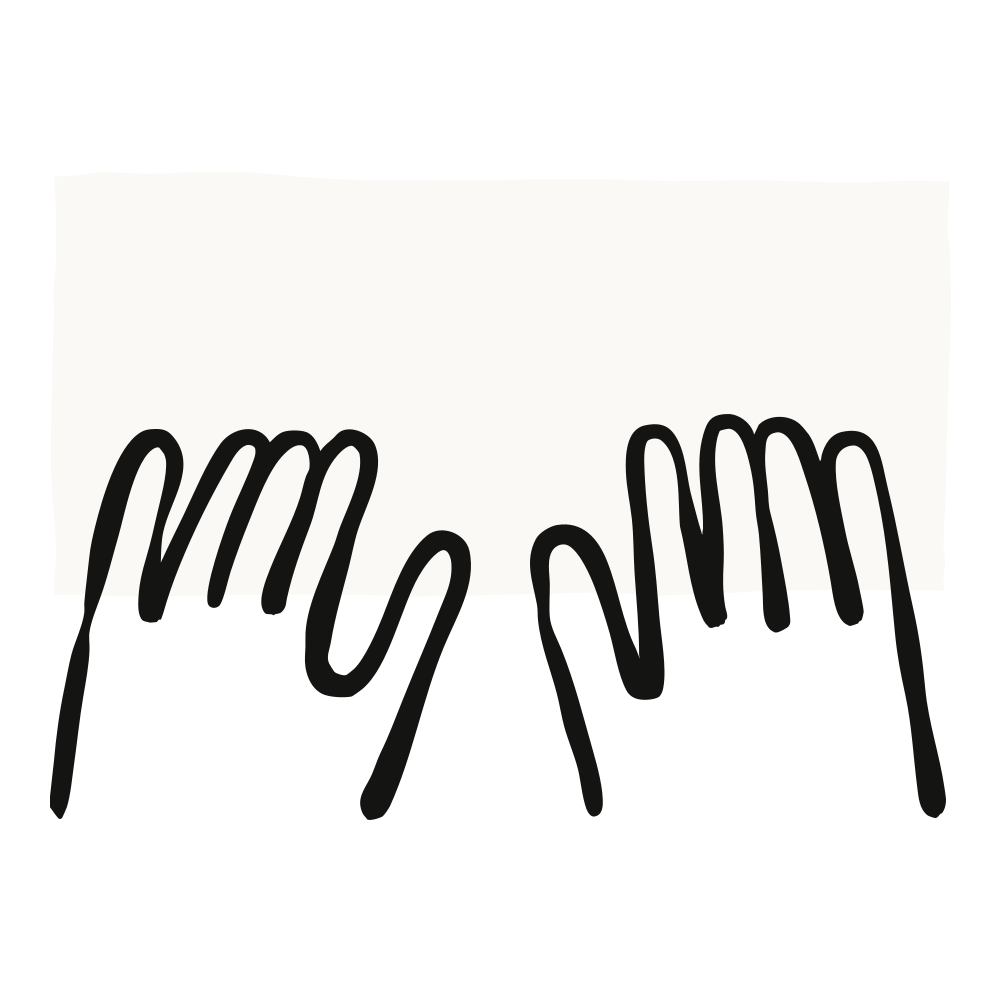

Anthropic 마케팅팀의 Adam Ward가, 주간 영업 리포트 하나를 자신이 지원하는 모든 AE(영업 담당자)별 월요일 맞춤 브리핑으로 바꾼 방법을 이야기한다. 코딩이 아니라 "설명"으로 시작했고, 사용자 피드백이 곧 프롬프트 엔지니어링이 됐다.

마케터로서 가장 어려운 일 중 하나는 현장에서 벌어지는 모든 소식을 영업팀에 최신 상태로 유지하는 것이다. 복도에서 영업 담당자가 "아, 그 이벤트 얘긴 못 들었는데요"(혹은 그 신규 백서, 그 웨비나)라고 말하는 순간, 최신 작업물을 영업 담당자에게 — 나아가 고객에게 — 전달할 기회를 놓쳤다는 걸 깨닫는다.
처음 해법은 많은 마케터에게 익숙한 방식이었다. 월요일 아침 15분 영업팀 스탠드업. 일요일 저녁마다 사업부 전반의 업데이트를 모아 슬라이드로 만들고, 회의에서 직접 전달한 뒤 덱을 Slack에 공유했다. 그걸로 끝일까? 그렇지 않았다. Claude를 쓸 수 있는 상황에서 이 과정은 지나치게 수작업이었고, 팀이 커져 여러 영업팀을 동시에 지원하게 되자 슬라이드 루틴은 따라가지 못했다. 게다가 업데이트 자체가 점점 덜 유용해졌다. 팀별로 딱 맞는 기회를 골라낼 시간이 더는 없었기 때문이다.
필자가 원한 건 Claude가 그 작업을 대신하고, 영업 담당자마다 더 나은 "제품"을 만들어 주는 것이었다. 즉 담당 계정에 맞춰 개인화되고, 마케팅에서 진행 중인 모든 활동과 매칭된 주간 다이제스트다.
마침 팀에서 마케팅 해커톤을 열었다. 반복되는 프로세스와 워크플로를 Claude Code로 다시 만드는 데 집중하는 시간이었고, 팀원들과 한 시간을 이 문제에 쏟은 것이 결정적인 차이를 만들었다. 해커톤처럼 캐주얼하고 동료 주도로 배우는 자리는, 평소 업무에서는 따로 시간을 내기 어려운 실험과 탐색을 가능하게 해 준다.
동료 마케터들에게 가장 많이 받는 질문은 "AI를 어떻게 시작하나요?"다. 필자의 접근법은, 특히 Claude Code에서는, 이런 프롬프트로 문을 여는 것이다. "나는 기술자가 아니지만 이런 구체적인 과제가 있다. 나를 비즈니스 문제를 깊이 이해하는 프로덕트 매니저로 대하고, 한 단계씩 함께 진행해 달라." 생각을 소리 내어 정리하는 편이라, 문제를 설명하는 자기 목소리를 녹음해 그 전사본을 Claude에게 주는 일도 많다. 그러면 Claude가 비즈니스 맥락을 전부 갖게 된다.
주간 AE 다이제스트의 경우, 먼저 목표를 Claude에게 설명하는 것으로 시작했다. 마케팅에서 무슨 일이 벌어지고 있고 그것이 담당자의 고객에게 어떤 도움이 되는지를 담은, 담당자별 주간 Slack 메시지. 그다음 Claude가 지향할 템플릿으로 가짜 주간 업데이트를 직접 한 편 써 줬다. 영업 담당자는 행동 지향적이라는 걸 알기에 "이번 주 톱 3" 목록으로 시작했다. 다가오는 이벤트나 최근 콘텐츠처럼 고객에게 바로 공유할 수 있는 액션 아이템 세 개다. 매니저용 롤업(roll-up) 템플릿은 별도로 썼다. 매니저는 개별 계정보다 팀 전체를 조망하는 관점을 원하기 때문이다.
다음으로 Claude를 MCP를 통해 BigQuery에 연결했다. BigQuery는 마케팅팀의 단일 진실 공급원(source of truth)으로, HubSpot·Clay·Salesforce에서 온 데이터를 세밀하게 들여다볼 수 있다. 단순하게 시작하고 싶어서 이벤트와 웨비나에 대한 단일 소스부터 손댔다. 각 업데이트를 개인화하기 위해, CRM에서 담당자의 영업 구역(territory)과 Slack에 공유된 관련 계정 업데이트를 Claude가 가져오게 했다. 그러면 Claude가 이 둘을 함께 해석해 개인화된 주간 업데이트를 만들어 낸다.
시간이 지나면서 마케팅 내 다른 팀들과 함께 데이터를 확장해, 지금은 브리핑에 블로그 글·전자책 같은 신규 콘텐츠, 고객 사례, 웨비나, 심지어 파트너 생태계의 이벤트까지 들어간다.
현장에 배포할 때는 테스트 그룹이 되기로 한 영업팀 하나로 시작했다. 10명 규모로 보내는 건 오류가 생겨도 부담이 덜했고, 그 그룹은 피드백을 주기로 약속돼 있었다. 첫 발송 이후 몇 가지를 손봤다.
일부는 그냥 오류였다. 예를 들어 소스 시트에 URL이 없는 이벤트에 대해 Claude가 그럴듯해 보이지만 아무 데도 가지 않는 링크를 지어냈다. 팀은 즉시 이것을 프롬프트에 하드 룰로 못박았다. "URL을 절대 만들어내지 말 것." 이제 링크는 주소가 소스 시트에서 한 글자도 다르지 않게 온 경우에만 렌더링된다. 이후 버전에서는 링크 없는 이벤트를 브리핑에서 아예 제외했다. 영업 담당자가 아무도 등록시킬 수 없는 이벤트는 결국 노이즈일 뿐이라는 걸 깨달았기 때문이다.
첫 주가 끝날 무렵 프롬프트에는 콘텐츠 규칙 9개가 들어 있었고, 하나하나가 영업 담당자나 매니저의 피드백에서 나온 것이었다. 지식 근로자 대상 워크숍에 엔지니어링 VP가 추천됐다는 지적이 들어오자, 이제는 연락처의 직함을 이벤트가 의도한 대상과 대조하고 맞지 않으면 조용히 제외한다. 산업군 게이트는 리테일 계정이 금융권 디너 초대에 끼지 않게 막는다. 아직 담당 계정이 없는 신규 입사 영업 담당자에게는 빈 메시지 대신 짧은 환영 노트가 나간다.
나머지는 데이터 문제였다. 단일 진실 공급원을 유지하는 게 얼마나 어려운지는 마케팅에 있는 사람이면 다 안다. 예를 들어 필드 이벤트 시트는 6주 동안 열 순서가 세 번 바뀌었다. 이에 대비해, 매 실행을 시트의 헤더 행을 읽고 컬럼 매핑을 검증하는 것으로 시작하도록 프롬프트를 바꿨다. "C열을 보라"고 하드코딩하는 대신, 이제 지시는 "이벤트 URL이 들어 있는 열을 찾아라"에 가깝다.
초기 실행 이후 다이제스트를 필자가 지원하는 모든 팀으로 확장했고, 지금은 필드 마케팅이 영업 전체를 대상으로 이를 운영한다. 매주 월요일 아침, 여러 Anthropic 영업 세그먼트의 AE들이 Slack을 열면 DM 하나가 와 있다. 그 주의 우선 액션 3가지, 담당 계정 관련 필드 이벤트, 다가오는 웨비나에 이미 등록한 연락처, 공유할 만한 마케팅 콘텐츠, 그 밖의 후속 조치 제안이 담겨 있다.
각 메시지는 수신자 본인의 계정 목록에서 구성되므로, 똑같은 메시지는 하나도 없다. 이 다이제스트는 실제로 효과를 내고 있다. 최근에는 임원 대상 디너의 등록자 수가 일주일 만에 두 배가 됐는데, 순전히 알맞은 담당자들이 월요일 아침에 알맞은 이벤트를 눈앞에서 봤기 때문이다.
Anthropic의 BDR(사업 개발 담당자)들이 자기들 버전을 원했을 때는 필드 하나만 바꿔 프롬프트를 복제했다. BDR은 CRM에서 AE와는 다른 관계를 통해 계정에 매핑되기 때문이다. 프롬프트 구조와 콘텐츠 규칙은 그대로 이어졌고, BDR 버전은 이틀 만에 라이브가 됐다. 이후 고객 성공(CS)팀과 얼라이언스팀에도 같은 방식을 적용했고, 영업 외 다른 크로스펑셔널 파트너들에게는 전체 마케팅 활동 개요를 제공한다.
비즈니스가 아무리 빠르게 움직여도, 팀과 필자는 Claude의 도움으로 영업 담당자들이 이번 주에 무슨 일이 있는지, 어떤 계정과 이벤트를 우선해야 하는지를 정확히 알고 월요일을 시작하도록 만든다. 월요일 발송은 전량 아카이빙되기 때문에 어떤 담당자가 어떤 날짜에 무엇을 받았는지 그대로 꺼내 볼 수 있고, 매니저는 팀 전체 추천을 롤업 하나로 본다. 나가는 내용은 여전히 필자가 읽지만, 시스템이 더는 승인을 기다리지 않는다. 몇 주 전 휴가를 갔을 때도 월요일 발송은 아무 문제 없이 알아서 나갔다.
Claude Code를 쓰며 겪은 경험에서 나온 팁을 정리하면 다음과 같다.
Claude는 일요일마다 몇 시간씩 잡아먹던 수작업 프로세스를 자동화했다. 하지만 이 프로젝트로 팀과 필자가 얻은 것은 시간보다 훨씬 나은 것이다. 결과물이 더 개인적이고, 더 유용하고, 더 측정 가능해졌다. 당신은 Claude로 어떤 마케팅 프로세스를 개선할 수 있을까?